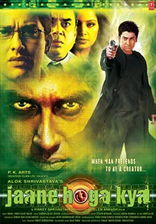

The genetics
Human cloning is the core of this Hindi science-fiction thriller. Siddharth, a scientist who believes in cloning despite a colleague's death in an earlier experiment and his superiors' warnings, pursues it in a secret privately funded laboratory, first with rats and then on himself. The film presents the result as a dark double: the clone is more violent than the original (the source notes he is also darker-skinned), commits crimes in Siddharth's name, steals the research and plans to release an army of clones. Siddharth is a sympathetic scientist undone by his own creation, and the film frames cloning as dangerous and easily misused, ending on uncertainty about the child the clone has fathered. In reality a clone would be a genetically identical but younger individual, not an adult copy with a different temperament.
How genetics is portrayed
- Overall portrayal of genetics
- negative Cloning is shown as a dangerous technology that turns against its well-meaning creator, and the ending stays uneasy about the clone's unborn child.
- Outcome of the genetic intervention
- negative Cloning produces a violent double who assaults, murders and frames his creator and plans to release more clones; several characters die.
- Siddharth Sardesai
- hero Aim: curiosity (neutral). He pursues human cloning out of belief in its potential, first at a research facility and then in a secret lab funded by his girlfriend's father; the film keeps him sympathetic, a victim of his creation who finally destroys it.
- Siddharth's clone
- villain Aim: power (negative). The clone kills Dr. Krishnan to steal the cloning research, takes over Siddharth's life and prepares a warehouse of clones to unleash on the world, until he is killed.
The story
Siddharth Sardesai is a scientist working on human cloning, two years after his friend and colleague Sanjay died in a failed experiment. When his boss, Dr. Krishnan, and the police officer Rathore discourage the project, his girlfriend Aditi's father agrees to fund it, and Siddharth sets up a secret laboratory in an abandoned factory. After repeated failures he clones a rat, which turns out aggressive. Pursued by the police, he jumps off a cliff and is thought dead, but survives and clones himself. The clone is more violent: he assaults a woman and frames Siddharth, seduces Krishnan's daughter Suchitra, kills Krishnan to steal the research and has Siddharth committed to an asylum. Aditi, who blames Siddharth for her brother Sanjay's death, has been helping the clone, but she dies protecting Siddharth. With Rathore's help, Siddharth destroys a warehouse full of clones and kills his double.